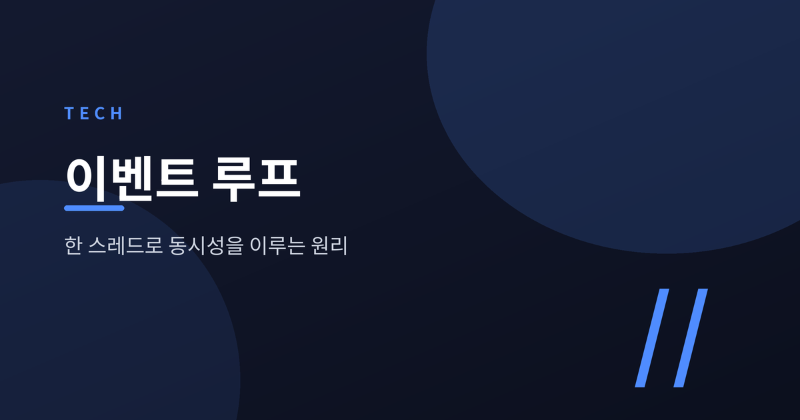
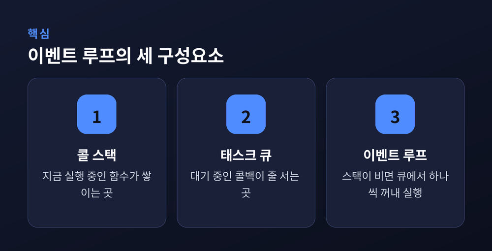
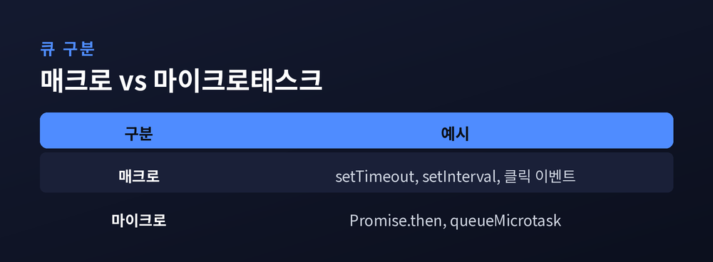
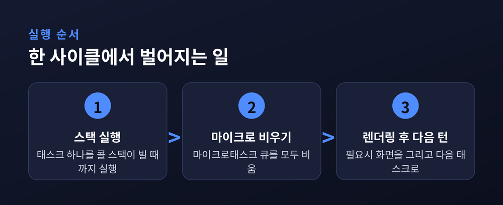
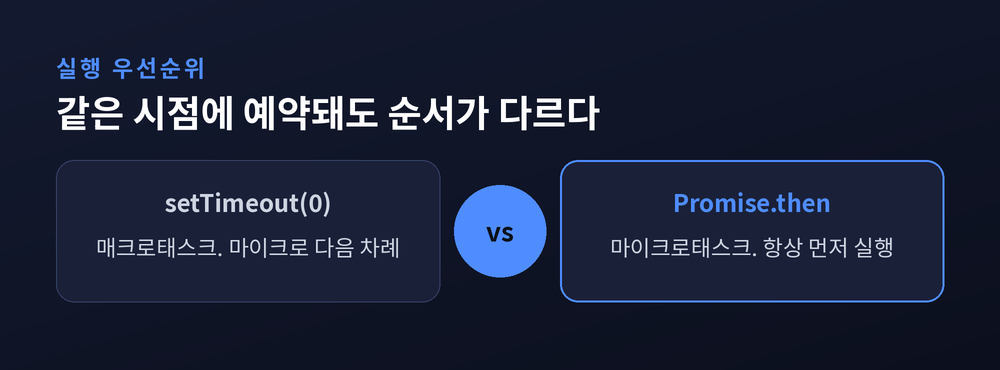

오늘은 자바스크립트 이벤트 루프에 대해 이야기해 보려 합니다. 자바스크립트는 스레드 하나로 동작하는 언어입니다. 그런데도 타이머, 네트워크 요청, 클릭 이벤트가 뒤엉키지 않고 순서대로 처리됩니다. 그 비밀이 바로 콜 스택과 큐, 그리고 이벤트 루프의 조합에 있습니다.
자바스크립트는 원래 멀티프로세서 컴퓨터가 흔치 않던 시절에 단일 스레드 언어로 설계됐습니다. 그래서 동시성 모델도 C나 Java와는 근본적으로 다릅니다.
함수가 호출되면 인자와 지역변수를 담은 프레임이 만들어져 콜 스택 위에 쌓입니다. 함수가 끝나면 그 프레임은 스택에서 빠집니다. 자바스크립트 엔진은 이 스택이 완전히 비어야 다음 작업으로 넘어갈 준비를 합니다.
여기서 중요한 사실이 하나 있습니다. 콜 스택이 비어 있지 않으면, 즉 어떤 코드가 아직 실행 중이면, 다른 어떤 작업도 끼어들 수 없습니다. 이 원칙 하나가 이벤트 루프 전체를 이해하는 열쇠입니다.

콜 스택이 비면 다음에 실행할 코드를 어디선가 가져와야 합니다. 이때 쓰이는 것이 두 종류의 큐입니다.
태스크(매크로태스크)는 프로그램을 처음 실행하는 것, 클릭 같은 이벤트가 비동기로 디스패치되는 것, setTimeout()이나 setInterval()의 타이머가 발동하는 것처럼 표준 메커니즘으로 예약되는 작업입니다. 이런 작업은 모두 태스크 큐에 쌓입니다. 이벤트 루프는 이 큐에서 가장 오래된 태스크 하나를 꺼내 실행합니다. 한 번의 루프에서는 딱 하나만 처리합니다.
마이크로태스크는 성격이 다릅니다. 이를 만든 함수나 프로그램이 끝난 직후, 자바스크립트 실행 스택이 완전히 비었을 때만 실행되지만, 이벤트 루프로 제어권이 넘어가기 전에 먼저 처리됩니다. 대표적으로 Promise의 .then, .catch, .finally 콜백과 MutationObserver 콜백, 그리고 queueMicrotask()로 직접 예약한 콜백이 여기 속합니다.
두 큐의 결정적 차이는 이렇습니다. 태스크는 한 번의 루프 반복에서 하나만 처리되지만, 마이크로태스크는 콜백 하나가 끝날 때마다 큐가 완전히 빌 때까지 계속 처리됩니다. 마이크로태스크 실행 중에 새 마이크로태스크가 추가되더라도, 그것마저 다음 태스크보다 먼저 처리됩니다. 그래서 마이크로태스크를 재귀적으로 계속 예약하면 이벤트 루프가 거기서 빠져나오지 못하는 위험도 있습니다.
ECMAScript 명세는 마이크로태스크에 해당하는 개념을 "Job"이라 부릅니다. 명세는 Job이 예약된 순서대로(FIFO) 실행되어야 하고, 하나가 시작되면 끝날 때까지 다른 Job이 끼어들 수 없다고 규정합니다. 다만 모든 Job을 똑같은 우선순위로 다루라고 강제하지는 않습니다. 실제로 명세 자체가 "웹 브라우저와 Node.js는 Promise 처리 Job을 다른 작업보다 높은 우선순위로 취급한다"고 명시하고 있습니다.

정리하면 이벤트 루프 한 턴은 대략 세 단계로 굴러갑니다.
먼저 태스크 큐에서 가장 오래된 태스크 하나를 꺼내 콜 스택이 빌 때까지 실행합니다. 그 태스크가 끝나면, 마이크로태스크 큐에 쌓인 항목을 모두 처리합니다. 이 과정에서 새로 추가된 마이크로태스크도 큐가 빌 때까지 계속 처리합니다. 마이크로태스크 큐가 완전히 비고 나서야, 브라우저는 필요하다면 화면을 다시 그립니다. 그러고 나서 다음 태스크를 가져오는 새 턴이 시작됩니다.
즉 마이크로태스크는 매 태스크가 끝날 때마다, 그리고 콜 스택이 비는 모든 순간마다 우선적으로 비워집니다. 반면 매크로태스크는 한 턴에 딱 하나씩만 순서대로 처리됩니다. 이 비대칭이 자바스크립트 비동기 코드의 실행 순서를 결정짓습니다.

이론만으로는 감이 잘 오지 않으니 코드로 확인해 보겠습니다.
console.log('script start');
setTimeout(function () {
console.log('setTimeout');
}, 0);
Promise.resolve()
.then(function () {
console.log('promise1');
})
.then(function () {
console.log('promise2');
});
console.log('script end');명세를 정확히 따르는 환경에서 출력 순서는 script start → script end → promise1 → promise2 → setTimeout입니다.
이유는 이렇습니다. script start와 script end는 최초 스크립트라는 하나의 태스크 안에서 동기적으로 실행됩니다. setTimeout의 콜백은 지연 시간이 지난 뒤 별도의 새 태스크로 큐에 들어가므로, 지금 실행 중인 태스크(스크립트 전체)가 끝나야 실행 후보가 됩니다. 반면 Promise.resolve().then(...)은 이미 settle된 프로미스에 걸렸기 때문에 곧바로 마이크로태스크를 큐에 넣습니다. 마이크로태스크는 현재 태스크가 끝나자마자, 다음 태스크보다 먼저 처리됩니다. 그래서 promise1, promise2가 setTimeout보다 앞섭니다.
예전엔 이 순서가 브라우저마다 제각각이었습니다. 2015년 기준으로 일부 구형 브라우저는 프로미스 콜백을 마이크로태스크가 아니라 새 태스크처럼 처리해, setTimeout이 promise1보다 먼저 찍히는 경우가 있었습니다. 지금은 다릅니다. Promise 콜백을 마이크로태스크 큐로 처리하는 쪽이 명세로 정착됐고, 그래야 태스크 관련 렌더링 지연이나 다른 작업과의 비결정적 순서 뒤섞임을 피할 수 있다는 점도 함께 정리됐습니다.
한 가지 더 짚을 부분이 있습니다. 마이크로태스크 체크포인트는 "콜백이 끝나고 실행 컨텍스트 스택이 완전히 비었을 때"만 돕니다. 예를 들어 요소를 실제로 클릭해 이벤트가 발생하면 리스너 콜백 사이사이에 마이크로태스크가 처리되지만, 스크립트에서 element.click()을 직접 호출하면 호출부 자체가 아직 스택에 남아 있어 리스너 두 개가 먼저 다 실행된 뒤에야 마이크로태스크가 처리됩니다. 콜 스택이 비었는지 여부가 실행 순서를 가른다는 원칙이 여기서도 그대로 적용되는 셈입니다.

브라우저의 이벤트 루프가 태스크 큐와 마이크로태스크 큐라는 비교적 단순한 이단 구조라면, Node.js의 이벤트 루프는 libuv가 관리하는 여러 단계(phase)를 순환합니다. 공식 문서 기준으로 timers, pending callbacks, idle/prepare, poll, check, close callbacks 순서입니다.
각 phase는 자신만의 FIFO 콜백 큐를 갖습니다. 이벤트 루프가 한 phase에 들어가면 그 단계의 콜백을 큐가 비거나 시스템이 정한 한도에 도달할 때까지 처리하고 다음 phase로 넘어갑니다. 특히 poll phase가 중요한데, 여기서 새 I/O 이벤트를 가져오고 관련 콜백 대부분을 실행하며, 필요하면 다음 이벤트가 들어올 때까지 대기합니다. poll 큐가 비고 타이머 임계 시간이 지났다면 다시 timers phase로 돌아갑니다.
setImmediate()와 setTimeout(fn, 0)을 두고 흔히 헷갈리는데, 메인 모듈에서 직접 호출하면 어느 쪽이 먼저 실행될지는 프로세스 성능에 좌우되는 비결정적 상황입니다. 하지만 I/O 콜백 안에서 호출하면 setImmediate()가 항상 먼저 실행됩니다. poll phase 직후 곧바로 check phase로 넘어가기 때문입니다.
process.nextTick()은 이벤트 루프의 정식 phase가 아닙니다. nextTickQueue는 지금 진행 중인 연산이 끝나는 즉시, 이벤트 루프가 어느 phase에 있든 상관없이 처리됩니다. V8이 직접 관리하는 마이크로태스크 큐(Promise, queueMicrotask())와는 별개의 큐입니다. 심지어 순서로 보면 process.nextTick() 쪽이 더 먼저 처리됩니다. Node.js 공식 문서도 이 네이밍이 사실 거꾸로 됐다고 인정하면서, 대부분의 상황에서는 이유를 추론하기 쉬운 setImmediate() 사용을 권장한다고 밝히고 있습니다. 다만 process.nextTick()을 재귀적으로 계속 호출하면 이벤트 루프가 poll phase, 즉 실제 I/O 처리로 넘어가지 못하고 굶는 상황이 생길 수 있다는 점은 주의할 부분입니다.
마지막으로 한 가지만 덧붙이겠습니다.
이벤트 루프는 화려한 기술이 아닙니다. 콜 스택이 비어야 다음 일을 한다는 단순한 규칙과, 그 "다음 일"을 어떤 순서로 꺼내올지 정하는 큐 두세 개가 전부입니다. 하지만 이 단순한 규칙이 자바스크립트가 스레드 하나로도 수많은 비동기 작업을 어긋남 없이 처리하는 이유입니다.
"콜 스택이 비어야 다음 큐가 열린다" — 이 한 줄만 기억해도 setTimeout과 Promise가 왜 다른 순서로 찍히는지, Node.js의 process.nextTick이 왜 항상 먼저 실행되는지 스스로 설명할 수 있을 것입니다. 다음에 비동기 코드의 실행 순서가 헷갈리신다면, 그건 여러분의 착각이 아니라 큐가 원래 그렇게 설계되어 있기 때문이라고 답해드리고 싶습니다.